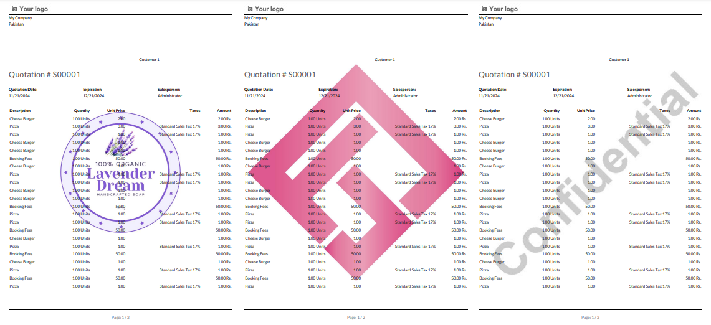
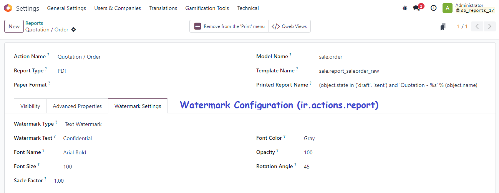
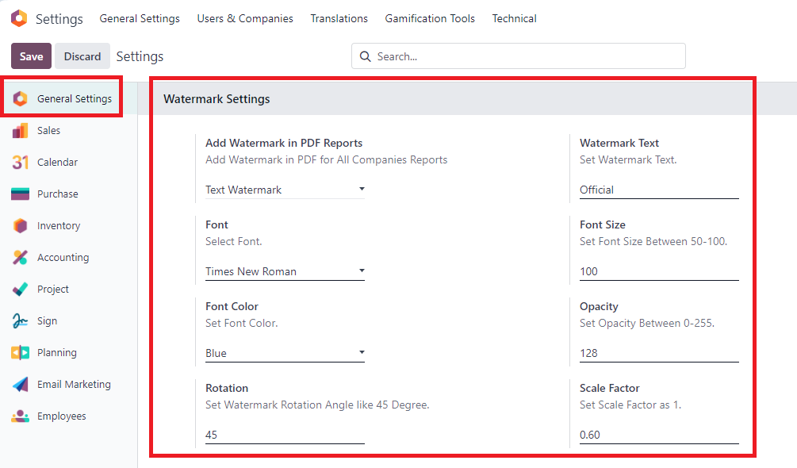

Enhance your Odoo PDF reports with customized watermarks! The Advanced Watermark Manager allows you to seamlessly add text, image, or PDF watermarks to your QWeb reports. Whether you need to apply watermarks for branding, confidentiality, or aesthetic purposes, this app gives you complete flexibility.
With support for both individual report-specific watermarks and company-wide watermark configurations, you can control how watermarks are displayed across your Odoo environment.
Choose between text, logo images, or even full-page PDF watermarks and easily apply them to each report. The app ensures that the watermark settings configured at the report level take precedence over those at the company level.

Go to Setting >> Technical >> Actions >> Reports Menu, and choose Sale Order report and go to Watermark Settings page/tab.

Go to Setting >> General Settings >> and navigate to Watermark Settings.

This app is ideal for companies looking to add a layer of branding, security, or professionalism to their PDF reports generated within Odoo. Perfect for businesses needing different watermarks for different report types, such as invoices, delivery orders, or quotations.
softwarebox18@gmail.com